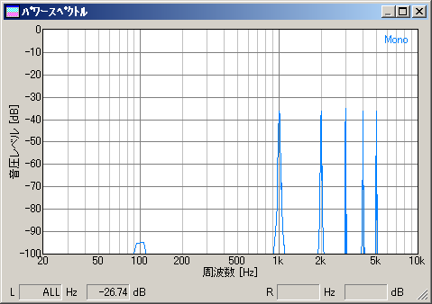
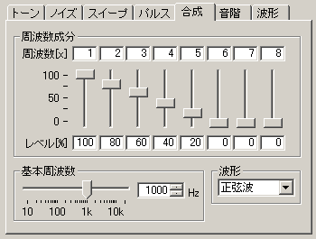
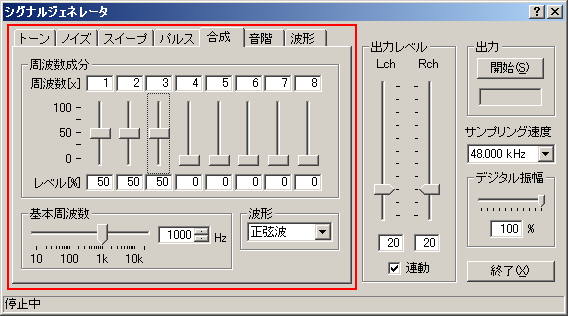

DSSF3 > RA > リファレンス > シグナルジェネレータ

| 項目 | 説明 |
| 周波数 | 基本周波数のx倍で合成する周波数成分を指定します。 |
| レベル | 各周波数成分のレベルを%で指定します。スライダーまたは数値で入力します。 |
| 基本周波数 | 出力音の基本周波数をスライダーまたは数値で入力します。 |
| 波形 | 出力音の波形を選択します。 →2-1．トーン参照 |
| 左：シグナルジェネレータ、右：FFTアナライザ測定画面 | |
| 【設定例１】基本周波数=1000Hz、周波数成分=x1、x2、x3、x4、x5をそれぞれ50%で指定 | |
|
 |
| 【設定例２】基本周波数=1000Hz、周波数成分=x1、x2、x3、x4、x5をそれぞれ100、80、60、40、20%で指定 | |
 |
|
DSSF3 > RA > リファレンス > シグナルジェネレータ